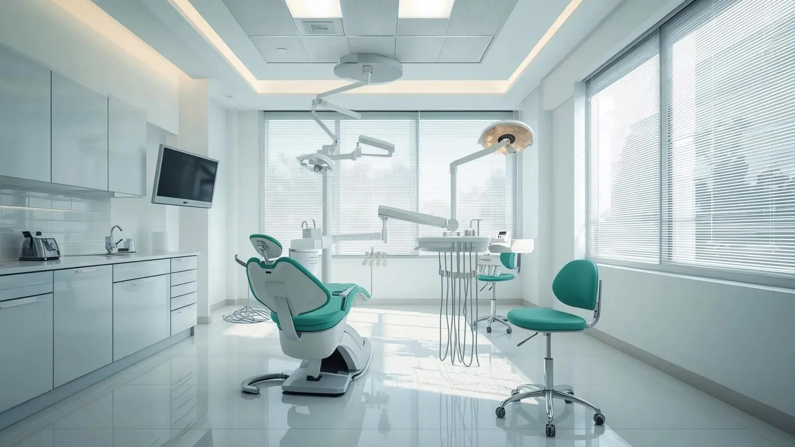

Dentist for Koroit
A dentist for Koroit, fifteen minutes from Tower Hill.
Koroit sits on the northern rim of Tower Hill, about seventeen kilometres north-west of Warrnambool, and the run into town takes around a quarter of an hour.
Small towns tend to value the same thing in a dentist: knowing who you are going to see. Dr Meg spent close to ten years in regional Western Australia watching patients handed between dentists as staff turned over, and opened her own surgery so the person you see this year is the person you will see in five.

What we offer
- Dental implants — assessment, placement and the final crown, all in the one practice
- Root canal treatment — including molars
- Difficult extractions — including surgical cases
- Crowns & bridges — made by a dental laboratory
- Check-ups & air-polishing cleans
- Children’s dentistry — from the first teeth
- Partial dentures, mouthguards and night guards
Appointments are scheduled with enough time to do the work properly, which matters more when you have driven in for it. Where a longer visit can save you a second trip, we will try to arrange it that way.
Ready to book? Give us a call on [PHONE NUMBER]. You would be very welcome.
Getting to us
[STREET ADDRESS], Lava Street, Warrnambool VIC 3280
Driving — head south-east from Koroit and join the Princes Highway toward town. It becomes Raglan Parade on the outskirts; turn into the CBD and make for Lava Street, one block north of Koroit Street. Roughly seventeen kilometres, about fifteen minutes.
Bus — worth knowing about. Services run between Koroit and Warrnambool several times a day and terminate at the Lava Street Interchange, on our street. Check current timetables with Public Transport Victoria.
Parking — the Warrnambool Shopping Centre undercover car park is closest, entered from Lava Street or Koroit Street. Ozone, Parkers and the Coles–Younger car parks are nearby, and Banyan Street usually has free on-street parking within the posted limits.
Common questions
Often. Tell us when you book that you are coming from Koroit and we will plan the appointments with the drive in mind.
For many patients, yes — it stops on our street. If you are having anything more involved than routine care, arrange a lift home.
Of course. We see people from across the Moyne Shire and the surrounding districts.
Routine appointments are best booked in advance. Urgent problems are different — phone us and we will get you in as soon as we reasonably can.